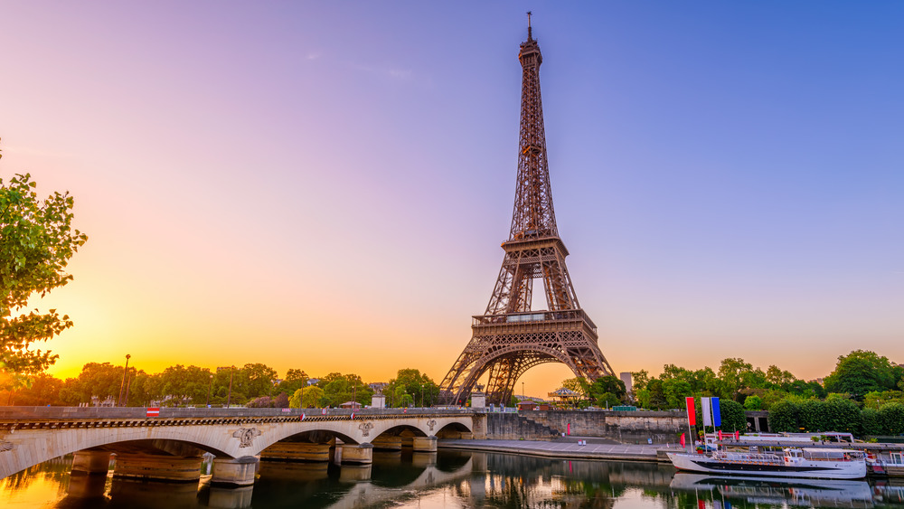
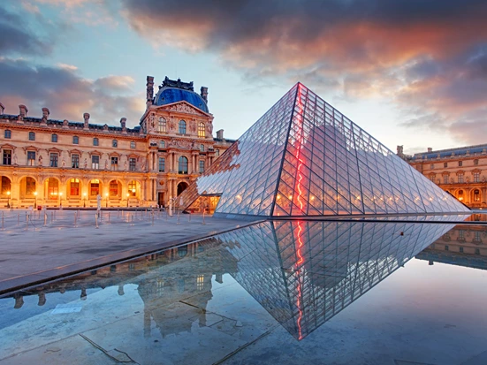
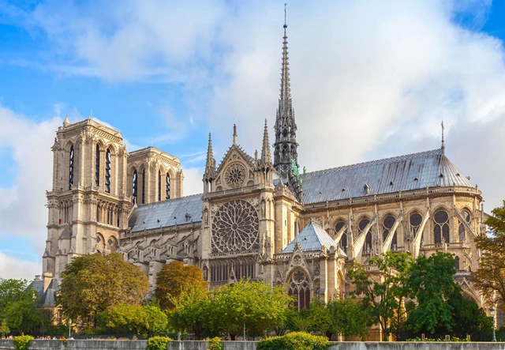
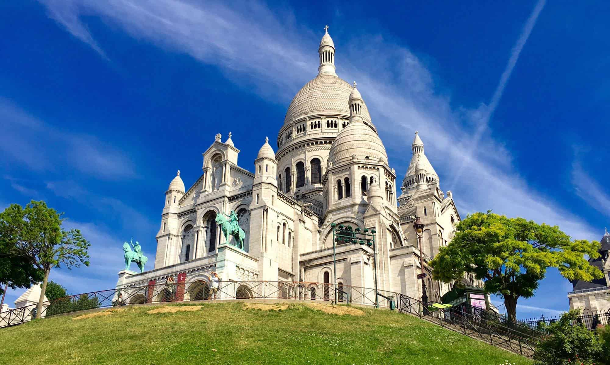

Paříž
Počasí v Paříži
Počasí v Paříži je mírné a oceánské. Léto bývá příjemně teplé, s teplotami kolem 25 °C, zatímco zimy jsou chladné, ale vzácně pod nulou. Srážky jsou rovnoměrně rozloženy po celý rok, což činí město ideální pro návštěvu v jakémkoli ročním období.
O Paříži
Paříž, hlavní město Francie, je známá svou bohatou historií, kulturou a ikonickými památkami. Eiffelova věž, Louvre, Notre-Dame a Sacré-Cœur jsou jen některé z mnoha míst, které přitahují návštěvníky z celého světa. Paříž je také městem módy, gastronomie a umění, a nabízí nezapomenutelné zážitky pro každého.
Roční počasí v Paříži
| Měsíc | Průměrná teplota (°C) | Teplota moře (°C) |
|---|---|---|
| Leden | 3-7 | - |
| Únor | 3-7 | - |
| Březen | 6-12 | - |
| Duben | 9-15 | - |
| Květen | 13-18 | - |
| Červen | 16-22 | - |
| Červenec | 19-25 | - |
| Srpen | 19-25 | - |
| Září | 16-22 | - |
| Říjen | 10-15 | - |
| Listopad | 6-10 | - |
| Prosinec | 3-7 | - |
Top místa, která musíte navštívit

Eiffelova věž

Louvre

Notre-Dame
